Master Praktikum: Machine Learning in Crowd Modeling & Simulation
This Praktikum course consists of 6 team projects, which include systematically studying and implementing algorithms relating to crowd modelling, dynamical systems theory, machine learning techniques and numerical analysis of complex systems, development of extensions for simulation software (Vadere), validation of models and data, and construction of neural networks applied to simulation results for modelling pedestrian movement speed.
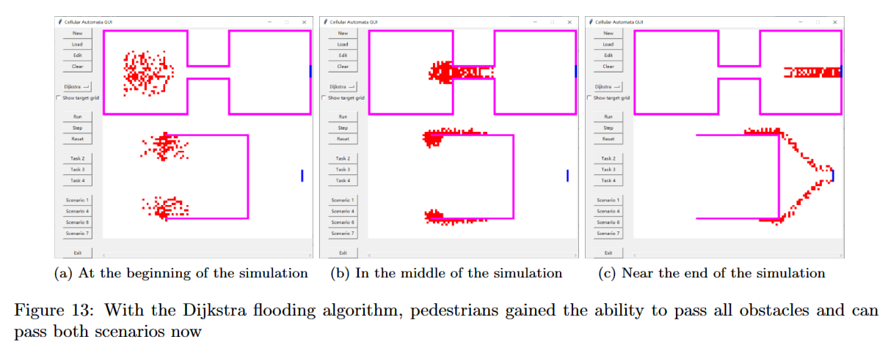
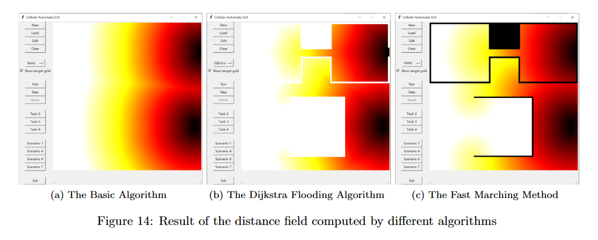
In the first project we model and simulate a human crowd with a simple cellular automaton, the kind of systems typically characterized by that each individual part being relatively simple, where interactions could lead to very complex behavior.
We set up our implementation and simulation environment from scratch with detailed visualization and user-interface for adding pedestrians, targets and obstacles, using Python and the tkinter package.
For obstacle avoidance, a rudimentary approach, the Dijkstra algorithm, and the Fast Marching method were introduced and compared for the computation of the distance field.
The developed system was tested with scenarios including corridor, bottleneck, corner, etc., following the RiMEA guidelines.

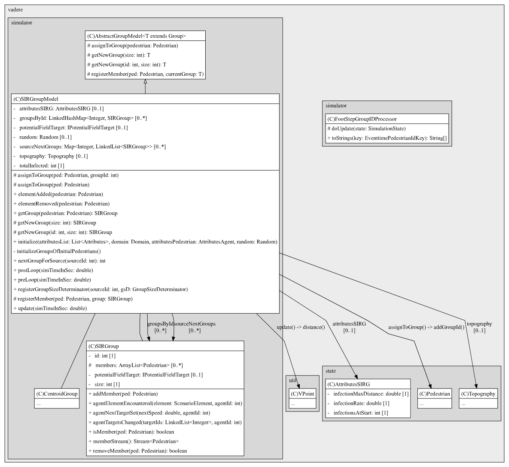
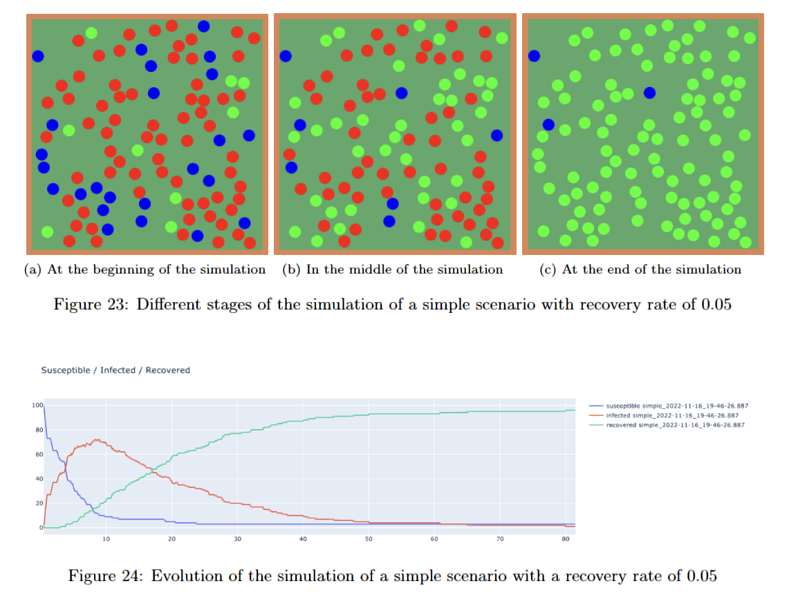
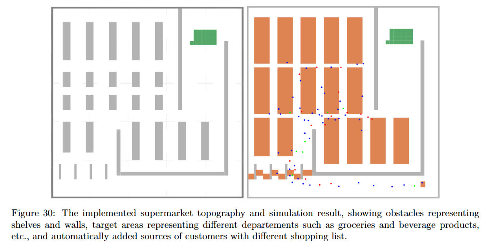
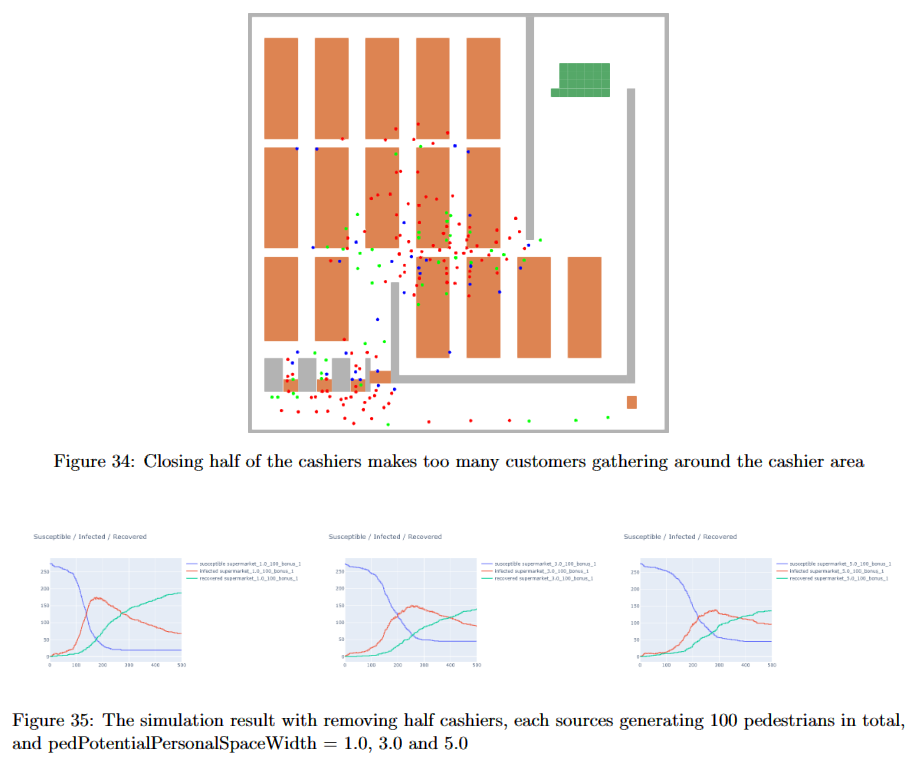
In the second project we integrated a new SIR (Susceptible, Infected and Recovered) model into the Vadere software, a tool for the simulation and visualization of human crowds, by modifying and extending its source code in Java and rebuilding the software. After the core part being tested, we added more features for visualization and recording of results, and constructed multiple scenarios including an artificial “supermarket” where pedestrians were spawned at the entrance, wandering inside the scenario and leaving after some time.
By increasing the potential space width of pedestrians, we simulate a “social distancing” policy in the supermarket and presented the infection results. We also tested different cases of controlling density at the entrance, closing several sections, closing half of the cashiers, etc., and discovered that some could indeed reduce the number of infections.
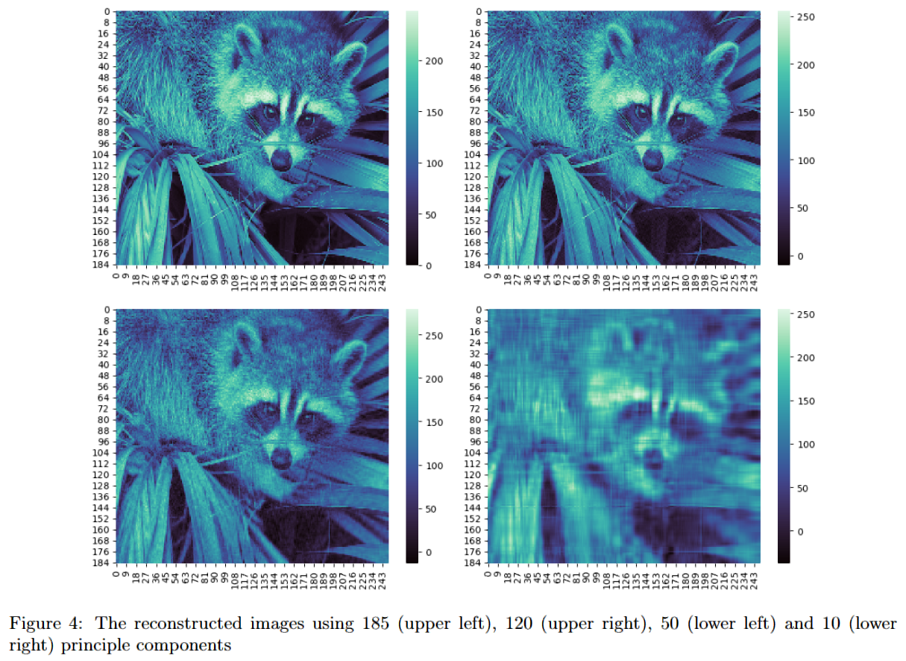
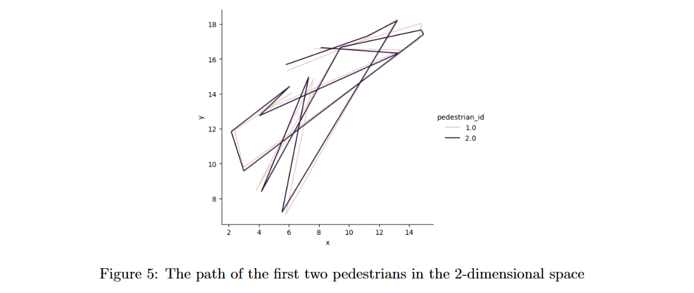
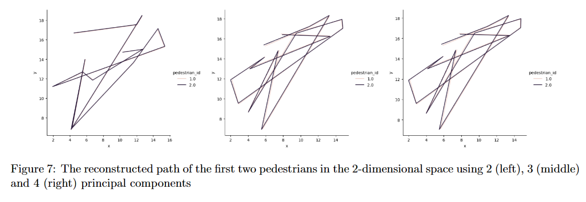
In the third project we studied methods for representing high-dimensional data with lower-dimensional representations, including Principal Component Analysis, Diffusion Maps, and Variational Auto-Encoders.
For the PCA, we applied the implemented method on image data and on trajectory data of coordinates of pedestrians over time steps, with visualization of reconstructions and energy loss. For the Diffusion Maps, we obtained approximations of the eigenfunctions on the swiss-roll manifold and the same trajectory data as PCA. For the VAE, we implemented and trained the models on the MNIST dataset, with different number of dimensions of latent space.
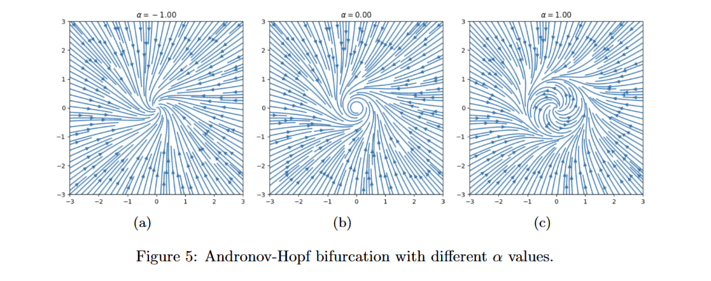
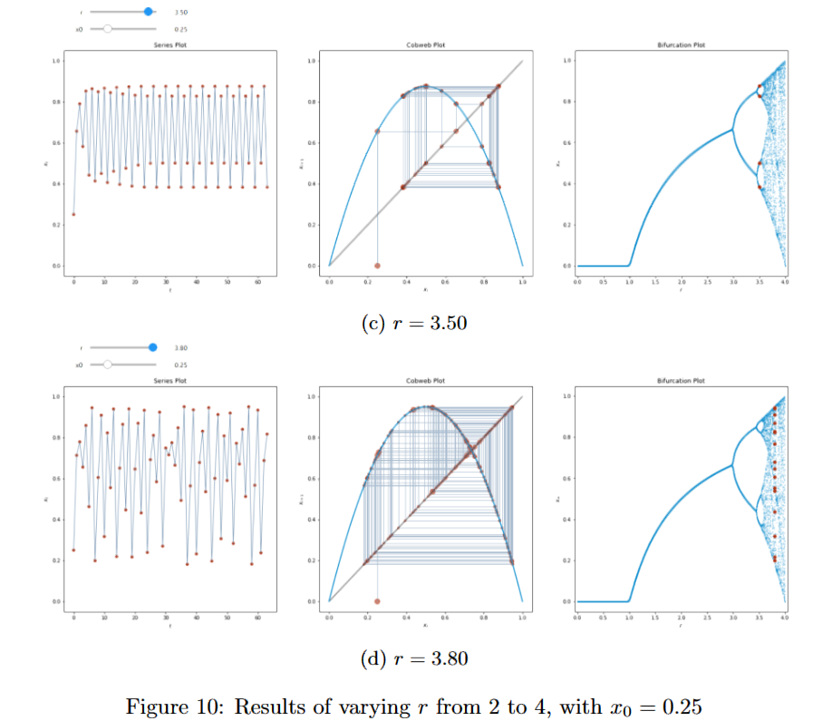
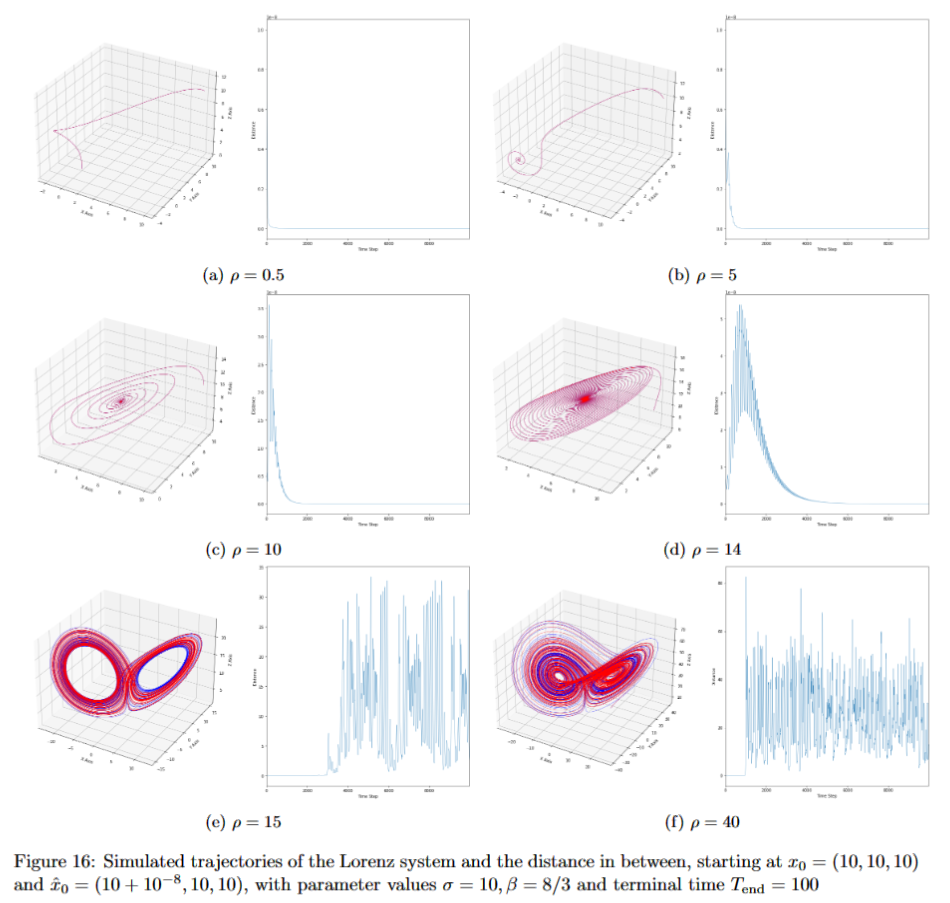
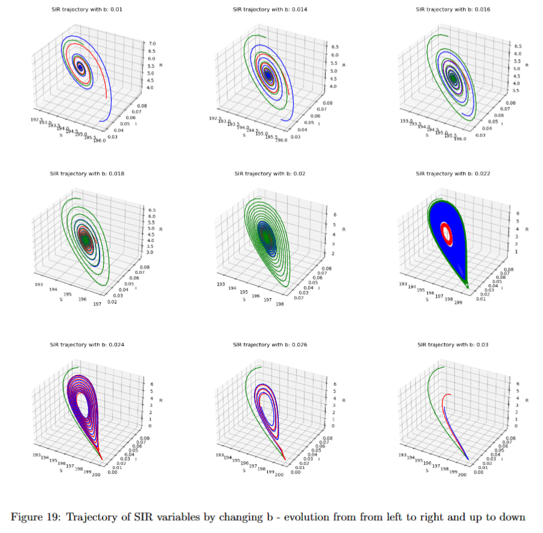
In the fourth project we studied bifurcations – a qualitatively changing behavior of dynamical systems over changes of their parameters – in different systems, including the cusp bifurcation \(\dot{x}=\alpha_1+\alpha_2 x^2 - x^3\), the Andronov–Hopf bifurcation \(\begin{cases} \dot{x}_1=\alpha x_1 - x_2 - x_1(x_1^2+x_2^2) \\ \dot{x}_2=x_1+\alpha x_2 - x_2(x_1^2+x_2^2) \end{cases}\), the discrete logistic map \(x_{n+1}=rx_n(1-x_n)\), the Lorenz system \(\begin{cases} \dot{x}=\sigma(y-x) \\ \dot{y}=\rho x-y-xz \\ \dot{z}=xy-\beta z \end{cases}\), and the crowd dynamic bifurcation in SIR model \(\begin{cases} \dot{S}=A-\delta S-\frac{\beta SI}{S+I+R} \\ \dot{I}=-(\delta+\nu)I-\mu(b, I)I+\frac{\beta SI}{S+I+R} \\ \dot{R}=\mu(b, I)I-\delta R \end{cases}\).
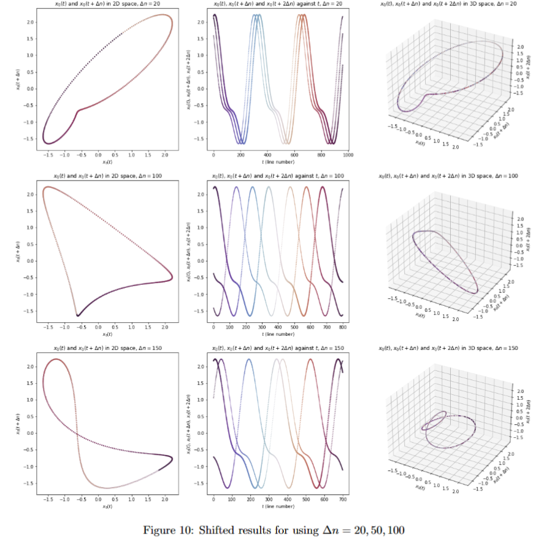
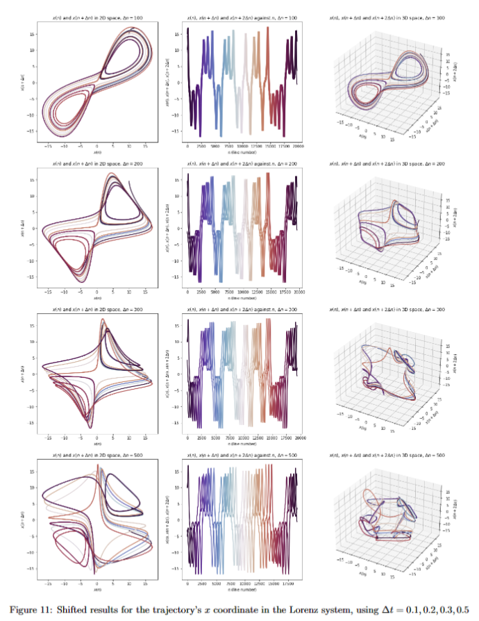
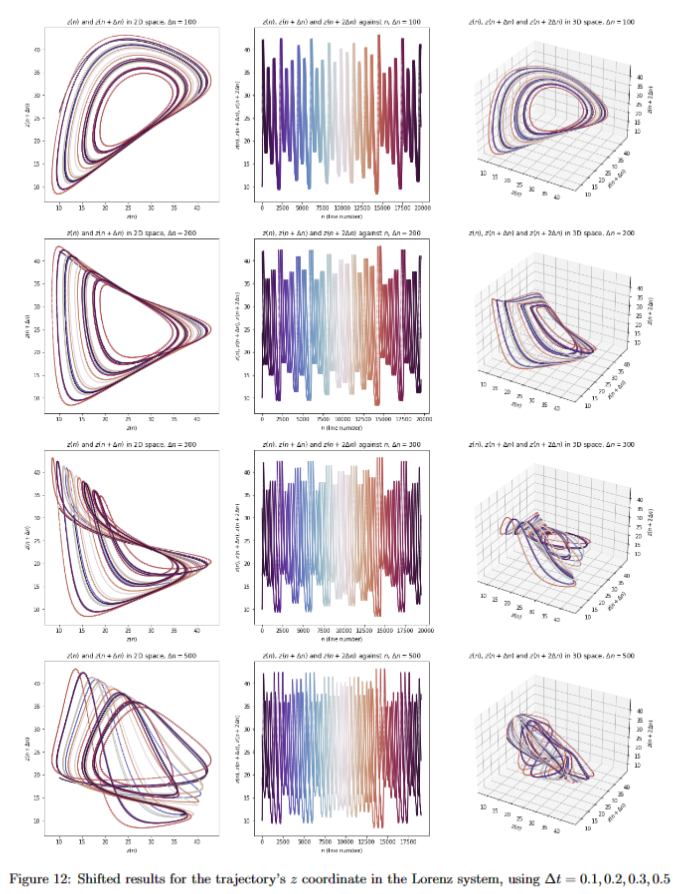
In the fifth project we studied extraction of rules from observation data of dynamical systems, and to use these underlying rules to predict about future observations. This includes approximating functions with linear functions and combination of radial functions, approximating linear and nonlinear vector fields with linear operator and radial basis functions, approximating chaotic dynamics using time-delay embedding, and finally predict crowd dynamics of utilization data in TUM Garching campus.
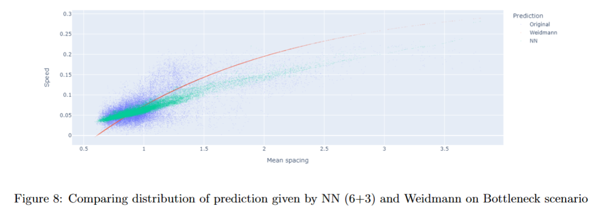
In the final project we focus on the speed of pedestrians and how this behavior can be predicted. Compared with the classic fundamental diagram based Weidmann model
\[ v = \mathrm{FD}(\bar{s}_{K}, v_0, T, l) = v_0\left(1-e^{\frac{l-\bar{s}_{K}}{v_{0}T}}\right), \]
a feed-forward Artificial Neural Network (ANN) with hidden layers \(H\)
\[ v =\mathrm{NN}(H, \bar{s}_{K}, (x_{i} - x, y_{i} - y,\, 1 \leq i \leq K)) \]
based on both the mean spacing and also the distances to K nearest neighbors could make more accurate predictions, which was proved empirically by testing different structures of neural networks on pedestrian data generated from software simulation in the corridor and bottleneck scenarios. The one with 6+3 nodes and 2 hidden layers has the best performance in the experiments.
In the distribution diagram, the results given by Weidmann model is a line as it is simply a non-linear function of the speed to mean spacing, whereas the NN has a wider distribution as it not only considered the mean spacing, but all the distances to nearest neighbors. This gives it a chance to fit the real data distribution better by capturing potential influences that the Weidmann model fails to take into consideration. Such powerful ability was guaranteed by neural network’s characteristics so as to consider higher dimensional features and model these complex non-linear relationships hidden behind the data distribution, compared to simple non-linear models.
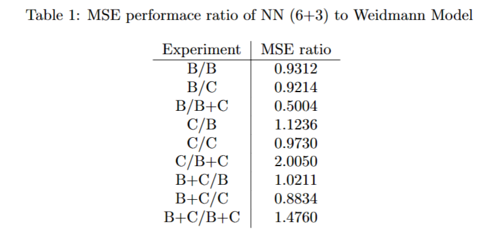